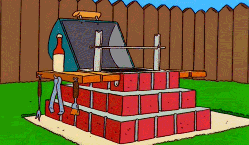

Algorithme et programmation
Cours 1
Benoit Simard
Présentation
Benoit Simard
IMA XV
Graphe addicte
Libérateur de données et de code
Vacataire depuis 2010
@logisima
Et vous ?
Nom, Prénom
Vous étiez où l’année dernière
Pourquoi l’IMA ?
Vos projets pour l’avenir ?
C’est quoi ce cours ?
Algorithme et Programmation
Devenir autonome en algorithmique
Savoir traduire un algorithme en Java
Commencer la programmation Objet
Le plan
34h de folie :)
Découverte de l’algorithmique
Traduction en Java
Les tableaux
Les objets et classes
Comment réussir
Etre attentif …
Comment réussir (2)
S’entraider !
Vous allez souvent travailler en binome
Comment réussir (3)
Faire par soi-même
Comment réussir (4)
Ne pas hésiter a poser des questions !

Comment réussir (5)
Savoir chercher de l’aide sur le net
developpez.com
openclassroom.com
L’algorithmique
Définitions
algorithmique
L’algorithmique est l’étude et la production de règles et techniques qui sont impliquées dans la définition et la conception d’algorithmes, c’est-à-dire de processus systématiques de résolution d’un problème permettant de décrire précisément des étapes pour résoudre un problème algorithmique.
algorithme
Un algorithme est une suite finie et non ambiguë d’opérations ou d’instructions permettant de résoudre un problème ou d’obtenir un résultat
Merci wikipédia
Savoir lire, écrire, compoter et coder !
Apprendre à lire et écrire du code est incontournable pour la compréhension le monde qui nous entoure.

Ne laisser pas la technologie vous échapper.
Algo 1
Algo 2
Algo 3
Algo 4
Algo 5
Algo 6
Fizz Buzz
Etant donnée un nombre, si c’est un multiple de 3 on affiche fizz, si c’est un multiple de 5 on affiche buzz, et sinon j’affiche le chiffre
1, 2, Fizz, 4, Buzz, Fizz, 7, 8, Fizz, Buzz, 11, Fizz, 13
Algo 7
Algo 8
Algo 9
Ecrire un programme qui demande l’année de naissance de l’tulisateur et répond "vous êtes mineur" ou "vous êtes majeur" suivant le cas.
Algo 10
Ecrire un algorithme qui, à partir de la donnée de la longueur de chacun des trois cotés d’un triangle, teste si le triangle est rectangle.
Algo 11
Ecrire un algorithme qui calcule la somme des 20 premiers nombres impairs
Algo 12
Ecrire un algorithme permettant le calcul du PGCD (plus grand diviseur commun) de deux nombres entrées par l’utilisateur
Merci
Des questions ?